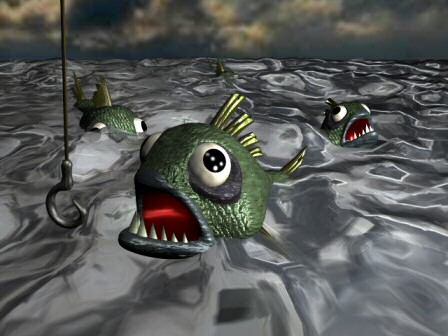
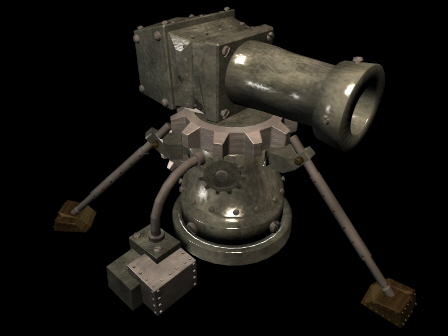
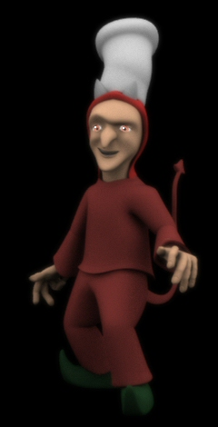

")
Issue 21 - Saradomin Illuminates

Topics of interest in this edition of the letters include the joys of fishing in the wilderness, the unfairness of drops from monsters, the measure of firepower of dwarf multicannons and the lies of Guthix...
Greetings loyal subjects, once again! It has not been long since last I spoke to you, yet I see my wisdom is sorely needed still.
It is for this reason that I have taken time out from my usual hectic schedule to answer the pleas and queries of my followers once more!
What questions left unanswered have been consuming the hearts and minds of loyal saradominists across my lands this time? Well let us see for ourselves...
Yo! Whats up my main bro, I got one question that I think your gonna get all tricked out over, but here it goes dude: Where do runes come from buddy. I mean, like, They just don't appear out of nowhere do they? That would be cool though. Awesome. Anyway, where do runes come from pal?
I is your friend pal
---Bion2
Ah, when I think back to the days when the mighty Wizards Tower stood gloriously on the ocean as the hard working mages crafted their runes to defend their settlements and villages in my name... I'm sorry, I seem to have wandered off slightly there.
To answer your question, many years ago a man who is known as the first wizard found a place made of a strange kind of rock that absorbed the mighty powers of nature.
Together with like minded individuals they began to mine this rock, and built mighty temples in honour of the forces they absorbed and began to fashion hundreds and thousands of rune stones in various temples so that they could let anyone with sufficient practice use these forces as magical spells.
There is a first hand account of this time available in the Library of Varrock, or due to a recent discovery brave adventurers may witness the method of creating rune stones for themselves firsthand!
Give it a try, and remember me as you do so!
saradomin why dont you put fishing spot in wilderness it would be better for people

I would prefer my followers to resist the evil lure of the wilderness entirely, but I accept that sometimes there is no recourse but to take action against that offensive place and enter it.
This is why I ensured that there would be fresh fish, even in the heart of the darkness that is the wilderness at the bandit camp.
Have an anchovy pizza in my name next time you are smiting the Zamorakians!
Dear Saradomin, lord of order, keeper of peace, and scourge of...(etc. etc.)
I've noticed the increasing number of spelling mistakes in the letters you publish. Not mistakes by yourself, but the people who write to you. Is it just me, or do you purposely mess up peoples letters to make them look complete idiots. I see an overlarge amount of grammar errors, mispelt words, and also repeated words in the majority of letters sent in to you.
So...is it everybody's lack of writing skills, or your quite amusing ability to 'randomly' change what people have to say?
/Gregnhilton (a.k.a Rocky)
P.S: I've had the entire UK read this letter before sending in to you, so there are no mistakes whatsoever. Also, If it's not you who is adding in extra words here and there, then I think it would be a good idea for you to edit people's letters for clarity (etc.)
Those who take themselves too seriously, and contain too much pride, as the saying goes, often approach a fall. Such as using a capital letter after a comma...
I am a god, so I do not make mistakes, but those who write to me are not (quite clearly in some cases) so my boundless love for the world lets me forgive them for their errors, and I am shocked that you would suspect me of making my followers appear unlearned by deliberately adding mistakes to their missives!
That might be something the treacherous Zamorak might do, but not me!
Mighty Saradomin,
I was wondering how come the drops are so unfair. A lot of times people stay days, weeks or even months in one spot, trying to receive a valuable item like a drgaon shield or dragon medium. I have been one of those that hsa killed many monsters in my quest of receiving a valuable piece of armour. Though whenver i see my friend come for his first time, he receives one. I hate when i see people coming in for about 2 days killing a fraction of the monsters i killed and receiving the valuable item i am after. Mighty Saradomin, if you can help me figure this out and if you can throw downa blessing to help me complete my quest in finding one of the valuable items.
Thank you,
Sub Killer
Lady luck is indeed a fickle mistress, as all adventurers can attest, but does it not make the reward so much sweeter when you have worked and searched for it for so long?
I think you will find that the more troublesome the search, the more fulfilling the bounty...
could u help out one of your followers and tell me where to find newts eyes
your follower,
sir fujiama2
I believe they are usually located in the two holes made to hold them on a newts face...
Oh allmighty saradomin
how do i regonice a zamorakian guthixian and saradominist from each other?
your humble folloer
su-27-87
Ask them for help;
A follower of mine will offer assistance instantly, for they are pure of heart and know the glory of performing good deeds in my name.
A cursed Zamorakian will likely call you a newcomer and laugh in your face, for they hold all life in contempt.
A Guthixian will likely be consumed by an inner turmoil as they struggle to decide whether helping you will be changing the balance of things too much...

Why does the ammo have to be only steel and not iron?!? I'm sure they'd sell more if you could make cannon ammo out of other material.
And why do multi-cannon balls vanish after shooting. Something so big, you'd think you could find them after shooting?!?
Strength though order, power though expirience,
Alex 43
The firing tests conducted by the dwarves before allowing the cannon to become a viable munition did indeed involve testing with various other metals, but it was found that the impurities present in iron and bronze meant often they would not cleanly leave the cannon chambers, and would end up exploding in the face of the unfortunate dwarf who was conducting the testing.
May he rest in peace.
As ingenious as the Dwarven mechanics are, when they designed their cannons they put perhaps too large an emphasis upon raw power and not enough upon finesse. As a result, every cannonball fired usually ends up vaporised from the force of the blast. As too, usually, does the target...
Dear ruler of Runscape
I was wondering how to become a loyal follower of any of you Runescape gods. How can i be a loyal follower of you. I have a question for you why do you end all of your replies in Strength through wisdom. When you say that do you mean if you have alot of wisdom on Runescape you get your strength through your wisdom or what.
The powerful knight,
Slm33211
I close my letters to my loyal followers with the motto 'Strength through wisdom' for it is the creed by which I exist.
A wise man with nothing may defeat a thousand fully armoured foes before they have even realised they are under attack, for wisdom is one of the greatest gifts I can bestow upon my followers.
Omnicient Saradomin,
I have been wondering why a certain place in the land of Runescape exists, and I must question you as to why it exists. I am speaking of the Underground Pass. You see, I am confused because the name "Pass" makes me think of a passage, which is usually a way to travel between point A and point B. I know that Point A is in West Ardougne, but I can't seem to find point B. The passage ends underground. The end point is where I fought Iban... but i couldnt see why anyone would want to build a passage way littered with traps and foul beings such as zombies and the like just to make it end up at a place where you could be killed (if you werent already killed while trying to get to the end). I know that you probably would rather not speak of this place, considering it is a veritable rallying point for your evil brother Zamorak's minions, but I must implore you, please impart to me the knowledge i am seeking.
I was also wondering if Gods have emotions or not.. Zamorak seems to be a fairly funny guy, and you seem to a caring God, whereas Guthix seems to care about nothing, he seems to have no emotion, happiness, anger, jealousy, or otherwise. Just wondering....
Faithful Saradominian,
Draega2
I wish I could assist you in your query of that accursed place, but unfortunately the stench of corruption and evil that fills it defiles mine senses and prevents me from approaching.
I do know that the lands to the West have been blocked from access by this abominable pass, but that workmen are working hard to re-establish the passage through the mountains that has been blocked from access for so long...
As for your other question, where most gods take on certain aspects of their followers, for they exist partly to fulfill a required and expected role, Guthix has no real followers to speak of and gains his power from different ways. He has no easily recognisable emotions (unless you count being boring as an emotion!) as he has no easily recognisable followers, purpose, or point of really existing!
To my official god of power and wonder you must answer these questions.
1) Why is Guthixes head a floating skull? I thought he wasn't "evil".
2) Why is Zamarok so ignorant? I very much dislike him, do you ever see him?
3) How much GP does Jagex pay you?
1) Guthixes current form (I have no idea why he has chosen it personally) seems to suit him somewhat, but you should not take the value of a person (or indeed a god) by their appearance. Just as a man may be beautiful to look at yet have a soul as ugly as sin, so too may a monster have a heart of golden honour.
2) Zamorak, alas, cannot see the purity and wisdom of my cause, and chooses to fight me at every step. I too very much dislike him, but I have had to somewhat accept his presence upon this world. I see him as little as I possibly can, for the spiteful tricks he plays upon me distract from my true calling.
3) I have no interest in the currency of men, I fulfill my role answering questions as it enables all to see my wisdom and serves to show good reason why they should choose to follow their lives in my name.
Dear horrid and putrid Saradomin,
I find this quote odd...
I think you should see an apothecary as soon as possible for you apparently have a medical condition that no-one else has.
And stay away from me, I'm a busy deity and can't afford to be slowed down with mystery illnesses.
For two reasons really...You stated he had an illness, yet you seemed to care very little about your servant...I admitt his complaining was annoying but you also claim to have a love for all humanity....So great you contradict yourself..I love it
Secoundly...I couldn't imagine your greater brothers Guthix and Zamorak catching a human illness like you are obviously afraid of doing...You're suposed to be all great...Yet you can become sick? I find this quite amusing as well...
Power through chaos..
-Vortosis
My love for the world is so great that I can indeed fall 'ill' through the manifestation of sympathetic symptoms.
Although no illness would actually be present within my deified form, I suffer every blow that falls upon my loyal followers along with them...
Oh, dearest of all the Gods who are deared, Saradomin, I need your help.
You, ruler of the world called Runescape, have sure noticed that I am a good cook. And to expire this noble skill, I've decided to enter the guild of chiefs, the Cooking Guild. Nevertheless, the Head cook says that i need a chiefs hat to enter, a demand I think is necessary. So I looked through all shops in the kingdoms Misthalin and Kandarin, they had plenty of good wares, but none had a chiefs hat. I've heard from some sources that imps have stolen them (cursed they shall be!), but no chiefs hat after 15 imps. So what will a dear follower to You do, when he has found his life's call, but can't follow it? Please answer me, so the head chief won't miss a good talent,
Yours sincerely,
Bedinsis.

Those pesky imps certainly do have light fingers and enjoy the petty theft that befits their Zamorakian hearts!
I can confirm for you that imps do indeed drop chefs hats, but it may take you some time finding the particular imp that has a fondess for pretending he is a chef to his friends.
Failing that, you may be forced to buy such a hat; either from another player or from the fancy dress shop located in East Varrock.
Dear Saradomin
hello i have come to tell you that you are a liar fake idiot noone belives you that you are real
Gala109
I would ask you what kind of 'liar fake idiot' would spend their time contacting a being they believe is not real...?
first of all tell guthix that he is the biggest lier in the entire universe.you made runescape, you have the best powers, and everyone knows it is best to be holy.guthix is just some stupid guy (well really "god") who does nothing.ah much better now i can explain my problem. you see im free planning to go member, but have friends stayin free, and i was wondering if while you're a member, you can go on freeworlds? if not i guess i wont be going member.
thx(thanks in internet talk)for listening,
danwizard208(master of mages[not])
Your choice is wise, for it is true that in all intents and purposes the world of RuneScape is as I have shaped it, except for some minor unimportant areas such as the wilderness, and although technically I did not create the world, it is my creation nonetheless.
As for your noble question, I can safely assure you that if you choose to pay the tithe to the council and become a 'member' you are still entitled to access the areas known as the free lands, and continue your life as before.
Whether you will in fact want to do so very often or not after experiencing the giddy heights of life as a full fledged RuneScape citizen is a differnt question entirely.
Oh great and mighty lord Saradomin.
If adventurers have explored the furthest points of the wilderness to the north and reached the boundaries of the impassable mountain terrain to the west, then why is it that they haven't made expeditions in to the vast desert of Al Kahrid or the wide oceans and seas of Gielenor (Runescape). If this in fact untrue and there are expeditions then why is it that the people never here of them?
Your loyal subject,
Blackspy667
A.K.A Blackdragon, Ruler of the Rune Army clan
The current political climate of the Council deters travellers from spreading too far outside of their boundaries, for fear of reprisals from neighbouring lands and continents - I can tell thee true however, that the terrain that is 'impassable' to the West is not as impassable as you may think.
Also, Al-Kharid is but a principality of the larger desert that sprawls Southwards, and the area known as the members wilderness is not the furthest point North that players will be able to access...
Oftentimes change comes slow, but when the more adventurous members of the Council gain enough power to reopen the trade and shipping routes against the wishes of their more conservative brethren then these lands will once more be visitable by players, along with new trials and tribulations to overcome.
And so once more I must leave you comrades, for time is the enemy of us all.
Hopefully I have brought some small amount of wisdom upon you all, so that I may leave you to take some small solace that you are never alone in this land as long as you have a friend in the glorious Saradomin.
Until next time...
Strength through wisdom,
Saradomin
DISCLAIMER: The views of Saradomin do not reflect the views of Jagex Ltd or it's employees. We tried to stop him saying anything controversial, but he is a god.

More articles in
God letters
|
|